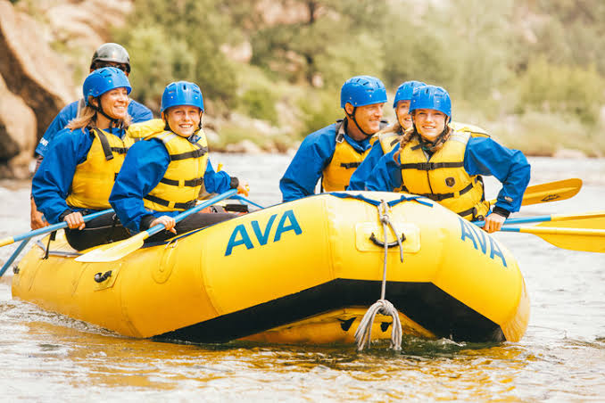

From peaceful first-time experiences to challenging
white water expeditions, we offer rafting adventures
designed to bring excitement, teamwork, and unforgettable
memories to every journey.
Explore our available adventures and find the experience
that matches your interests, confidence, and skill level.
Whether you are discovering rafting for the first time,
planning an outdoor experience with family and friends,
or seeking the thrill of powerful rapids, we have an
adventure for you.

Beginner Rafting
Take your first step into the exciting world of
white water rafting. This introductory experience
is designed for newcomers who want to discover
the river, learn basic paddling techniques, and
build confidence while enjoying the outdoors.
Create lasting memories with an exciting outdoor
experience shared with family and friends.
Enjoy the beauty of the river, work together as
a team, and experience the fun of rafting in a
welcoming and supportive environment.
Trip Details
Designed for shared group experiences
Encourages teamwork and cooperation
Suitable options depend on age and river conditions
Ready to push your limits? Take on a more demanding
rafting experience featuring powerful currents,
technical passages, and exciting rapids. Work
closely with your team and put your paddling
skills to the test in a thrilling river adventure.
Venture beyond the ordinary on a challenging
river expedition through winding waterways and
beautiful natural landscapes. This adventure
combines endurance, navigation, teamwork, and
the excitement of exploring the wilderness from
a unique perspective.
Note: Actual availability, suitability, pricing, and trip duration
depend on the operator, weather, river conditions, and safety
requirements. Confirm details before booking.
Your Safety Comes First
Every great adventure begins with proper preparation.
Participants should follow their guide's instructions:
Use the required safety equipment
Respect river conditions throughout the experience
Trip suitability depends on experience, age requirements, weather, and
water conditions.
Ready to Make a Splash?
Your next adventure is waiting. Contact our team to
learn more about the available trips, discuss your
preferences, and find an experience that suits you.